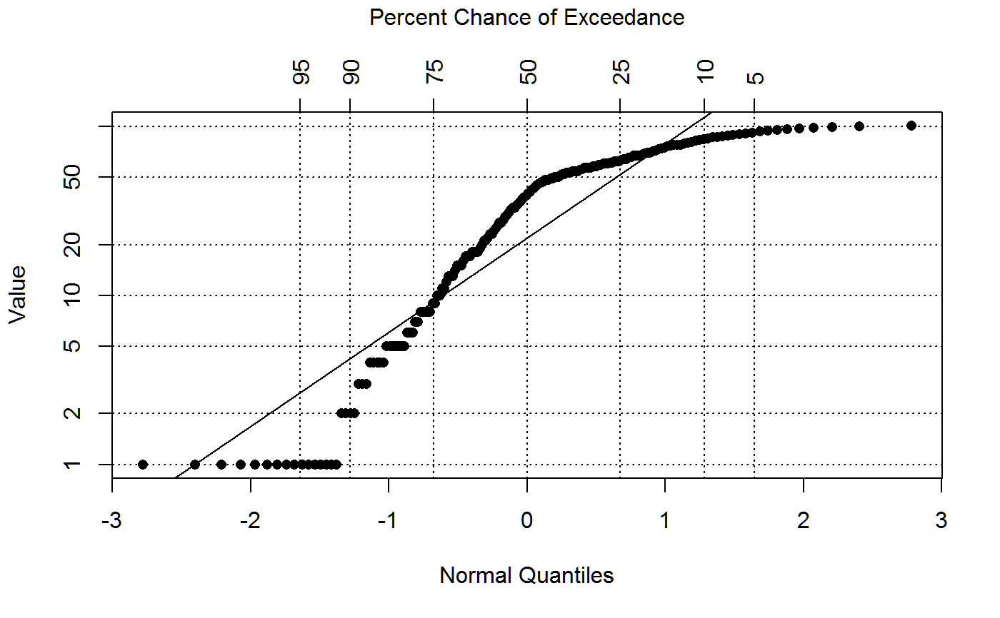
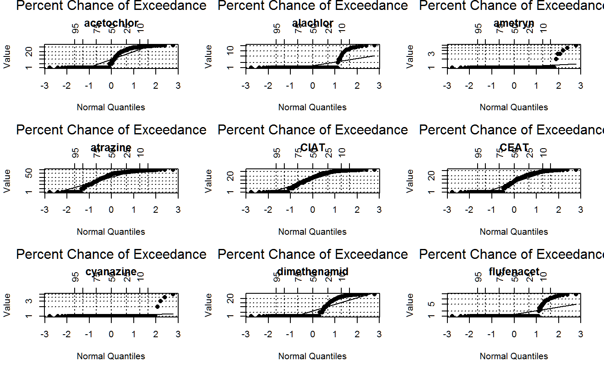

usgs.herbicides.RdConcentrations of selected herbicides and degradation products determined by laboratory method analysis code GCS for water samples collected from 51 streams in nine Midwestern States,2002
data("usgs.herbicides")
A data frame with 184 observations on the following 19 variables.
mapnummap number
usgsidUSGS ID
longlongitude
latlatitude
sitesite name
citycity
sampletypesample type code
datedate sample was collected
hourhour sample was collected
acetochlorconcentration as character
alachlorconcentration as character
ametrynconcentration as character
atrazineconcentration as character
CIATconcentration as character
CEATconcentration as character
cyanazineconcentration as character
CAMconcentration as character
dimethenamidconcentration as character
flufenacetconcentration as character
Concentrations of selected herbicides and degradation products determined by laboratory method analysis code GCS for water samples collected from 51 streams in nine Midwestern States, 2002.
All concentrations are micrograms/liter, "<" means "less than". The data are in character format to allow for "<".
The original report contains data for more herbicides. This data is for illustrative purposes.
Sample types: CR = concurrent replicate sample, FB = field blank, LD = laboratory duplicate, S1 = sample from pre-emergence runoff, S2 = sample from post-emergence runoff, S3 = sample from harvest-season runoff.
Scribner, E.A., Battaglin, W.A., Dietze, J.E., and Thurman, E.M., "Reconnaissance Data for Glyphosate, Other Selected Herbicides, their Degradation Products, and Antibiotics in 51 streams in Nine Midwestern States, 2002". U.S. Geological Survey Open File Report 03-217. Herbicide data from table 5, page 30-37. Site coordinates page 7-8. https://ks.water.usgs.gov/pubs/reports/ofr.03-217.html
None.
#> #>#> #> #># create censored data for one trait dat$y <- as.numeric(dat$atrazine) dat$ycen <- is.na(dat$y) dat$y[is.na(dat$y)] <- .05 # percent censored with(dat, censummary(y, censored=ycen))#> all: #> n n.cen pct.cen min max #> 184 0 0 1 101 #> #> limits: #> limit n uncen pexceed #> 1 0 0 184 1 #>#> n n.cen median mean sd #> 184.00000 0.00000 30.63365 60.32547 102.33953#> Warning: no non-missing arguments to max; returning -Inf# with(dat, boxplot(y)) pp <- with(dat, ros(obs=y, censored=ycen, forwardT="log")) # default lognormal plot(pp)plotfun <- function(vv){ dat$y <- as.numeric(dat[[vv]]) dat$ycen <- is.na(dat$y) dat$y[is.na(dat$y)] <- .01 # qqnorm(log(dat$y), main=vv) # ordinary qq plot shows censored values pp <- with(dat, ros(obs=y, censored=ycen, forwardT="log")) plot(pp, main=vv) # omits censored values } op <- par(mfrow=c(3,3)) vnames <- c("acetochlor", "alachlor", "ametryn", "atrazine","CIAT", "CEAT", "cyanazine", #"CAM", "dimethenamid", "flufenacet") for(vv in vnames) plotfun(vv)